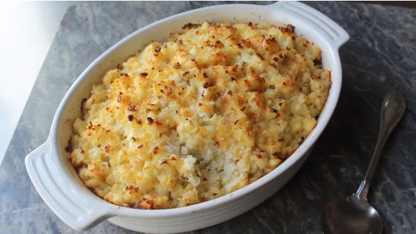

Potatoes Romanoff

Potatoes Romanoff is a rich, decadent steakhouse side dish
Baked potatoes are shredded and combined with cheese,
sour cream, shallots, salt, pepper, and cayenne pepper
to make this incredibly creamy and satisfying recipe.
- 1 teaspoon butter, or as needed
- 3 large russet potatoes, scrubbed
- ¼ cup minced shallots
- 3 teaspoons kosher salt
- ½ teaspoon freshly ground white pepper
- 1 pinch cayenne pepper, or to taste
- 2 ½ cups grated sharp white Cheddar cheese
- 1 ¾ cups sour cream
- Preheat the oven to 400 degrees F (200 degrees C).
- Poke holes into potatoes using a knife.
Wrap each potato in aluminum foil and
place on a baking sheet.
- Bake in the preheated oven until potatoes are
very tender and easily pierced with a knife,
about 1 hour and 15 minutes.
- Let potatoes cool to room temperature.
Unwrap and place on a plate. Cover with
plastic wrap and refrigerate until completely
chilled, 8 hours to overnight.
- Preheat the oven to 425 degrees F (220 degrees C).
Butter a casserole dish.
- Leave skin on potatoes. Use a cheese grater to
shred potatoes into a large bowl. Add shallots
to potatoes; season with salt, white pepper,
and cayenne. Toss with two forks until well combined.
- Add Cheddar cheese and mix well. Gently toss in
sour cream until barely combined.
- Transfer mixture to the prepared baking dish, piling
it up high, then patting it down very lightly.
- Bake in the preheated oven until piping hot and
the top is browned, 30 to 35 minutes.